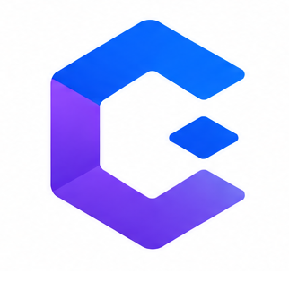

⌁
Incomplete bug reports
Developers receive vague issues without reproduction steps, customer impact, or technical context.

Codence Join early accessCodence reads support tickets, finds related context, detects duplicates, and creates engineering-ready issues so your team spends less time investigating and more time fixing.
Exporting more than 500 rows returns a timeout for enterprise accounts.
Date filtering bypasses the cached export path introduced in release v2.18.0.
Designed to work with the tools your teams already use
Codence connects customer knowledge with engineering context without adding another manual process.
Developers receive vague issues without reproduction steps, customer impact, or technical context.
Teams repeatedly investigate issues that already exist across support, Slack, and GitHub.
Critical issues wait while teams manually gather the information needed to begin work.
Every recommendation stays reviewable before it is sent to engineering.
Receive complete issues with reproduction steps, related incidents, likely ownership, and customer impact.
Give customers clearer updates and send engineering the right information the first time.
Understand issue trends, affected revenue, repeat problems, and engineering effort.
Codence is designed around least-privilege access, clear data boundaries, and human review.
Early pricing for teams helping shape the first version of Codence.
For early teams validating the workflow.
For scaling SaaS teams with regular escalations.
For larger teams with security and workflow needs.
We are inviting a small group of B2B SaaS teams to test Codence and receive founding-customer pricing.